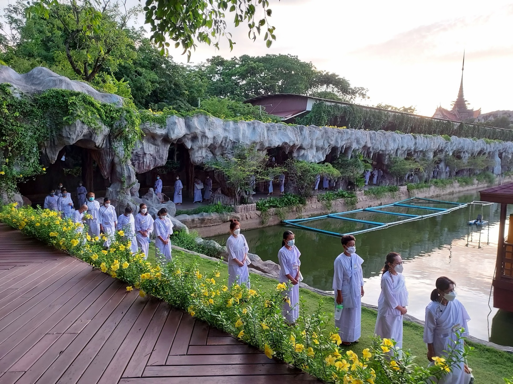
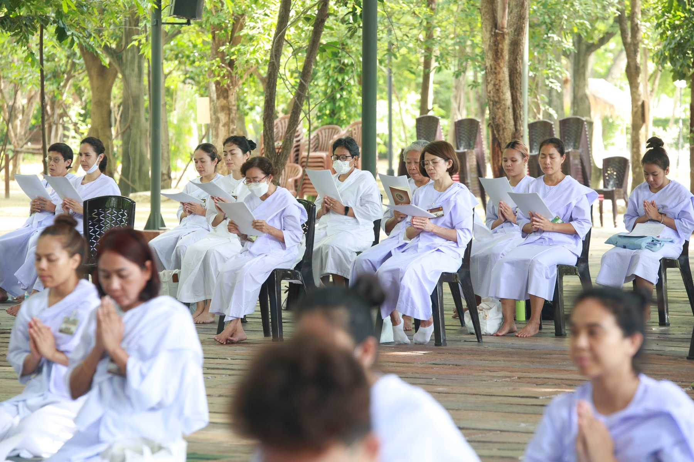

การลงทะเบียน
ผู้ปฏิบัติจะต้องลงทะเบียนล่วงหน้า และเข้าคอร์สตามวันและเวลาที่กำหนด
คอร์สกรรมฐานระยะสั้น
วัดมเหยงคณ์ เปิดคอร์สกรรมฐานระยะสั้น สำหรับผู้สนใจทดลองเข้าปฏิบัติธรรมก่อนเข้าสู่คอร์สกรรมฐานระยะ 9 วัน

ขอเชิญร่วมปฏิบัติธรรม
ผู้ปฏิบัติจะต้องลงทะเบียนล่วงหน้าตามลิงก์ด้านล่างของหน้านี้ และเข้าคอร์สตามวันและเวลาที่กำหนด
สามารถสมัครต่อเนื่องได้ 2-3 คอร์ส


ข้อปฏิบัติระหว่างคอร์ส
ผู้ปฏิบัติจะต้องลงทะเบียนล่วงหน้า และเข้าคอร์สตามวันและเวลาที่กำหนด
ฝากโทรศัพท์และเครื่องมือสื่อสารไว้กับทางวัด สำรวมวาจา งดการพูดคุย และถือศีลแปด
แต่งชุดนักปฏิบัติธรรม ทางวัดมีเสื้อผ้าชุดขาวให้ยืมสำหรับผู้ที่ต้องการ
พักรวมในอาคารใหญ่ แยกชาย-หญิง ใช้ห้องน้ำรวม เตรียมของใช้ส่วนตัวมาเอง ทางวัดมีอาหารเช้า เพล และน้ำปานะเลี้ยงทุกวัน
ไม่มีค่าใช้จ่ายใด ๆ ตลอดการเข้าปฏิบัติธรรม
เพื่อให้ผู้สนใจได้ทดลองเข้าปฏิบัติก่อนที่จะเข้าคอร์สกรรมฐานระยะ 9 วัน
รับสมัครเฉพาะผู้มีความตั้งใจจริง ๆ ในการอบรมเจริญสติปัญญาเท่านั้น
ผู้ปฏิบัติจะต้องลงสู่ลานธรรมปฏิบัติและแยกกันปฏิบัติตามลำพังตามกำหนดการ โดยเจริญสติอยู่ตลอดเวลา ไม่ควรทำเสียงดังรบกวนสมาธิของผู้ที่กำลังปฏิบัติ เช่น เดินลากรองเท้าให้เกิดเสียงดัง และไม่ควรใช้ถุงพลาสติกที่มีเสียงดัง
ยกเว้นที่นอน เสื่อ หมอน และผ้าพลาสติกรองนั่ง ทางวัดได้จัดเตรียมไว้ให้แล้ว
ผู้เข้าอบรมไม่ต้องเสียค่าสมัคร หรือค่าใช้จ่ายใด ๆ ทั้งสิ้น หากประสงค์จะทำบุญ สามารถบริจาคได้ตามกำลังศรัทธา
ท่านต้องสมัครเป็นสมาชิกของเว็บวัดมเหยงคณ์ก่อน จากนั้นเลือกคอร์ส 2-3-4 วันที่ต้องการสมัคร